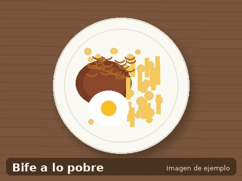

Bife a lo pobre
- 2 porciones
- 40 minutos
- Dificultad: media

El bife a lo pobre es un clásico de la comida chilena: un bistec jugoso acompañado de papas fritas, cebolla caramelizada y huevo frito. Abundante y delicioso, es el plato preferido para un almuerzo de fin de semana.
Ingredientes (2 porciones)
- 2 bifes de vacuno (200 g c/u)
- 4 papas medianas
- 2 cebollas grandes
- 2 huevos
- Aceite para freír
- Sal y pimienta al gusto
Preparación
- Pelar y cortar las papas en bastones. Freír en aceite caliente hasta dorar.
- Cortar las cebollas en pluma y sofreír a fuego lento hasta caramelizar.
- Sazonar los bifes con sal y pimienta. Sellar en sartén caliente con poco aceite.
- Freír los huevos al gusto.
- Servir el bife cubierto con la cebolla, acompañado de papas fritas y huevo frito.